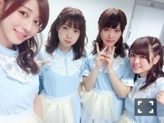

| 2016/06 17 Fri | セクシーダイナマイトとは。(´>∀<｀)ゝ |
ちはるーむへようこそ\( ˆoˆ )/
今日はのぎ天2生放送の前に
学校と美容院行ってきました！！
美容院ではカラーとトリートメントしてもらって髪の毛とぅるんです。
ブルーを入れてください！ってお願いしたら
私の理想の色になって感激( ;o; )♡
ずっとこの色にしたかった！！
ブルーアッシュは、暗めの色だけど
どこか透明感があって、外国人風な髪色になります。
外国人風な色にしたかったからよかった♡
でもまたすぐ色落ちしちゃうと思うから
また美容院行って髪の毛とぅるんしてもらわなきゃ！！
とぅるん！
とぅるんとぅるん！
なんか、とぅるんって可愛い。
とぅるん！

のぎ天2が今日から生放送されました〜！
今日は1回目と2回目に分けて、
それぞれメンバーを替えての放送だったよ
2回目のメンバーは、
私、愛未、川後、まあや、かりん、純奈！
のぎ天2は、ラジオ形式のような感じで
皆さんからのお便りや、
メンバーの裏エピソードや、
私たちの普段の様子などが
見られるラフな番組になっております！
今回は静岡のライブについてや、
46時間テレビの裏側、
メンバーへの質問等々。
質問の中に46時間テレビの人狼の時に
ちーちゃんが言ってたの「セクシーダイナマイト」ってなんですか？？
というのがきていました！！
そりゃそうだよね。
気になるよね。
あれは、人狼中に追放されてモニタールームに移動した時に
メンバーの様子を見ていた時に
さゆの胸元がセクシーなのに気付いて、
さゆがモニタールームに入ってきたときに
「さゆ！胸元がすごいセクシーダイナマイト」って言ったら、セクシーダイナマイトから放送されてしまっていた。ということです。
少しは謎が解けたかな...？
すっきりしたかな...？？笑
セクシーダイナマイト。
皆さんも使ってね(｡･o･｡)ﾉ笑
ライブの裏側写真の中の1枚♪

ブルーチーム(﹡ˆ ˆ﹡)
ピンク、紫、ブルーの3色だったんだけど
仲良しちゃん達がみんなブルーでした♡
のぎ天2は私服なんだけど
(今後どうなるか分からないけど...恐らくこれからも)
今日もチョーカーしたよ〜♡

リボン結び。猫ちゃんスタイル。
見えづらいかな！？( ◦˙ ˙◦ )
川後もまあやもチョーカーしてて可愛かった。
似合ってた。。
ちなみに飲んでるのは、
リンツのストロベリードリンク。
ほどよい甘さと酸味と、
チョコとのコントラストが
絶妙で美味しかった♡
皆さん、これからものぎ天2の活動を
楽しみにしていてください！！
観てね〜
明日はアルバム個別握手会ですね！！
楽しみだな(﹡ˆ ˆ﹡)
なに着ようかな〜〜
やっぱりあれかな。
きーめたっ！！
明日握手会会場行っても、
まいまいはいないんだよね。。
寂しいな。、
まいまいロス。
斎藤ちはる
コメント(199)
2016/06/17 23:00